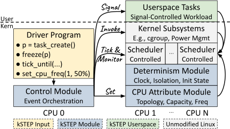

kSTEP: Kernel Scheduler Test and Evaluation Platform
Reproduce a Linux kernel scheduler bug in your browser
Each row is a real Linux CPU scheduler bug with a kSTEP driver that triggers it.
buggy boots the kernel from just before the fix, fixed the kernel with the fix.
A run takes about ten seconds.
Nothing running yet: press buggy or fixed in the table below.
kernel console
The kernel boots here: SeaBIOS, then Linux with kSTEP's boot arguments, then the kSTEP module loads the driver. About ten seconds.
driver output
The driver's trace streams here, one JSON record per scheduler event; the same records the paper's plots are drawn from.
Bug
Driver
Fix
Run
How kSTEP works
A driver program (kernel code, one per bug) declares a sequence of scheduler-invoking events: task creation, wakeups, sleeps, cgroup changes, ticks. The kSTEP module dispatches them on CPUs isolated from the rest of the system, with the scheduler clock and the tick under its control, so the unmodified scheduler runs the same code path it would in production and produces the same trace on every run. The trace above is that output; the plot compares it for the buggy and the fixed kernel.

Timing. Logical time advances only when the driver ticks, so events can be placed inside transient windows a few microseconds wide.
Control. Drivers create and steer tasks and cgroups, trigger kernel activities such as load balancing, and set CPU frequency and topology.
Determinism. Mocked clocks, isolated CPUs and reset state make the same driver produce the same trace, so buggy and fixed kernels can be compared line by line.
Fidelity. kSTEP never writes scheduler state directly; every state it reaches is reachable on a real system through the same code paths.
We present an in-depth study of CPU scheduler bugs, covering both functional violations and
misalignments between implementation and policy. Our study shows that these bugs are hard to
observe and even harder to trigger. To close this gap, we introduce kSTEP. kSTEP gives testers
fine-grained control over scheduler-invoking events and runs them deterministically on isolated
CPUs. kSTEP produces noise-free, repeatable traces that expose subtle behavior. We then build a
coverage-guided fuzzer on top of kSTEP for automated CPU scheduler testing. We demonstrate
kSTEP's effectiveness by reproducing seven real-world scheduler bugs and uncovering four new ones.
Resources
kstep: framework, drivers, fuzzer, and automation scripts.